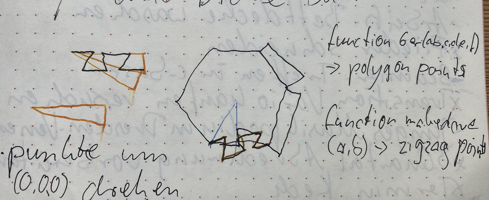

The project
I wrote a first prototype for the project of Kerry Williams from
Alaska who would like to build large objects, like kayaks, from 3d
printed puzzle pieces, so, now that more and more people have access
to 3d printers, more people have the chance to build large things on
their own.
The first prototype is a sphere shaped puzzle that I wrote in
OpenSCAD and the pieces are
hexagons and pentagons, like a
soccer ball / truncated icosahedron. The files are
on GitHub
and
on Printables.
I went for a truncated icosahedron because
- it is mathematically figured out, therefore I don't need to worry about tessellation to begin with, and
- I find beneficial, or a good example, that it is made of hexagons and pentagons because that provides a favorable ratio of edge length versus surface covered. (More about that in the video Hexagons are the Bestagons.)
The maths of the truncated icosahedron is taken from this printable.
As you can see on the image with the blue ball, the pieces have an edge inside in order to ease the maneuvering of the pieces against each other and to keep the last piece from falling inside of the ball.
The tilted dovetail is something I haven't seen before, so maybe I've invented it.
The code
Apart from moving around pentagons and hexagons, the code does this: call one piece, and cut away the previous pieces. This way it is made sure that the pieces fit neatly into each other.
The data for each piece looks like that:
rotate([hh,0,120]) rotate([hh,0,60])
piece(6, 18, [0, 0, 1, 1, 1, 0], $gap);
and the [0, 0, 1, 1, 1, 0] part encodes which sides are
dovetailed or initially flat.
The dovetailed pieces 'bite' into the flat peaces, resulting in two
pieces that fit together.
for (i = interval) { // interval = which pieces
intersection(){
globe(); // the sphere
difference(){
let($gap = 0) children(i);
if (i > 0) for (k = [0:i-1])
let($gap = gap) children(k);
};
};
};
The $gap makes sure that the pieces can get disassembled
again.
Text last updated: April 29th 2024